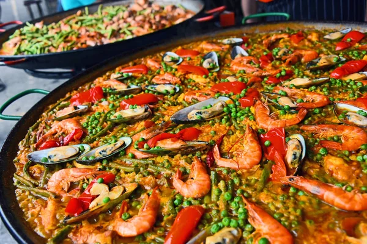
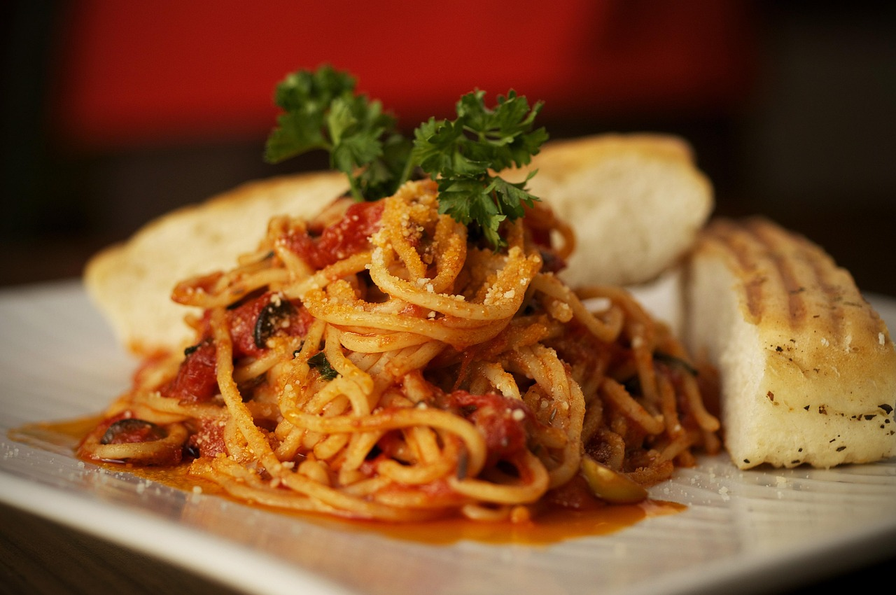
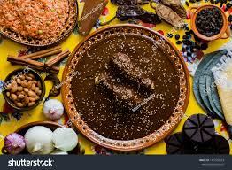
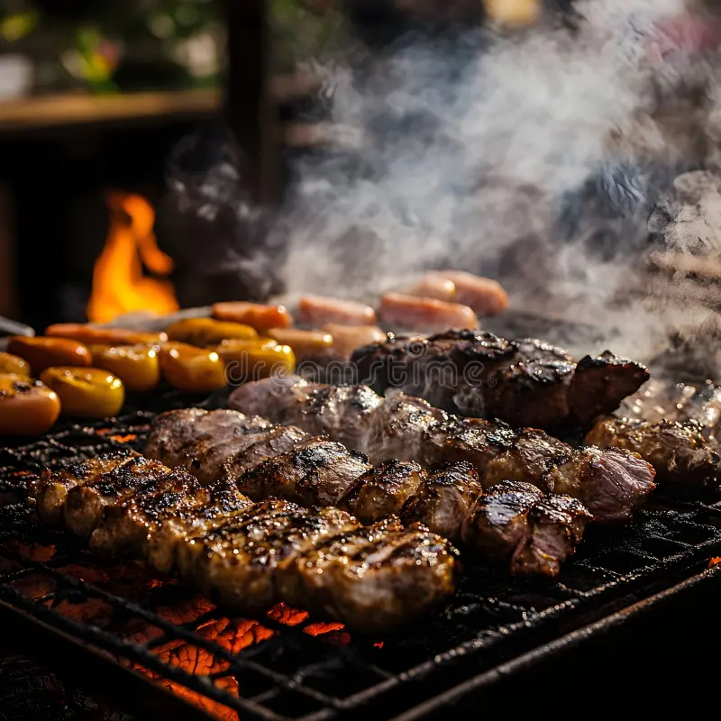

La Importancia de la Gastronomía
La comida representa mucho más que una necesidad básica; es una forma de preservar la historia, las costumbres y la identidad cultural de cada comunidad. A través de la gastronomía podemos conocer ingredientes, técnicas y tradiciones transmitidas durante generaciones.
El turismo gastronómico se ha convertido en una de las actividades más populares para los viajeros, quienes buscan vivir experiencias auténticas mediante la degustación de platillos típicos y bebidas tradicionales.
Cada país posee una riqueza culinaria única que refleja su geografía, historia y diversidad cultural.
Platillos Tradicionales

Tacos Mexicanos
Los tacos son uno de los platillos más representativos de México. Se preparan con tortillas de maíz o harina acompañadas de carne, verduras y diversas salsas.
Existen múltiples variedades, como tacos al pastor, de barbacoa, carnitas y cochinita pibil.

Paella Española
Originaria de Valencia, la paella es uno de los platillos más emblemáticos de España.
Se prepara con arroz, mariscos, pollo, verduras y especias, destacando el sabor característico del azafrán.

Pasta Italiana
La cocina italiana es reconocida mundialmente por su pasta, elaborada en diferentes formas y acompañada de una gran variedad de salsas.
Es uno de los alimentos más consumidos y apreciados a nivel internacional.
Especialidades Regionales

Mole Oaxaqueño
Considerado uno de los platillos más complejos de la gastronomía mexicana, el mole combina chiles, especias, semillas y chocolate en una preparación llena de tradición.
Es una receta emblemática de Oaxaca que suele servirse en bodas, festividades religiosas y celebraciones familiares.
Sushi Japonés
El sushi es una preparación basada en arroz sazonado acompañado de pescado, mariscos, vegetales y otros ingredientes frescos.
Representa una de las tradiciones culinarias más importantes de Japón y es reconocido internacionalmente por su presentación y delicado sabor.

Asado Argentino
El asado es una tradición gastronómica profundamente arraigada en la cultura argentina y destaca por la calidad de sus carnes.
Más que una comida, constituye una experiencia social que reúne a familiares y amigos alrededor de la parrilla.
Postres Tradicionales
Tiramisú
Postre italiano elaborado con café, queso mascarpone, cacao y bizcochos empapados.

Flan
Uno de los postres más populares en América Latina, preparado con leche, huevos y caramelo.

Cheesecake
Reconocido por su textura cremosa y gran variedad de sabores.
Platillos Más Populares del Mundo
| Platillo | País | Tipo | Popularidad |
|---|---|---|---|
| Tacos | México | Comida Tradicional | ★★★★★ |
| Paella | España | Arroz | ★★★★★ |
| Pasta | Italia | Pasta | ★★★★★ |
| Sushi | Japón | Mariscos | ★★★★★ |
| Asado | Argentina | Carne | ★★★★☆ |
Bebidas Tradicionales
- Chocolate caliente mexicano.
- Té verde japonés.
- Café colombiano.
- Mate argentino.
- Horchata española.
- Lassi hindú.
- Agua de frutas tropicales.
- Bebidas artesanales regionales.
Turismo Gastronómico
El turismo gastronómico permite a los viajeros conocer la cultura de una región a través de sus sabores. Los mercados tradicionales, festivales culinarios y restaurantes típicos forman parte de esta experiencia.
Muchas ciudades organizan eventos gastronómicos donde los visitantes pueden degustar recetas ancestrales y conocer ingredientes locales.
Enlaces de Interés
Curiosidades Gastronómicas
La pizza italiana, el sushi japonés y los tacos mexicanos son algunos de los alimentos más consumidos en el mundo. Cada uno ha trascendido fronteras y se ha adaptado a diferentes culturas sin perder su esencia.
La gastronomía continúa evolucionando gracias a la creatividad de chefs y cocineros que combinan ingredientes tradicionales con técnicas modernas.
Explorar la cocina de otros países es una excelente manera de aprender sobre su historia y estilo de vida.